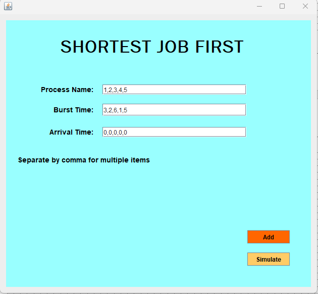
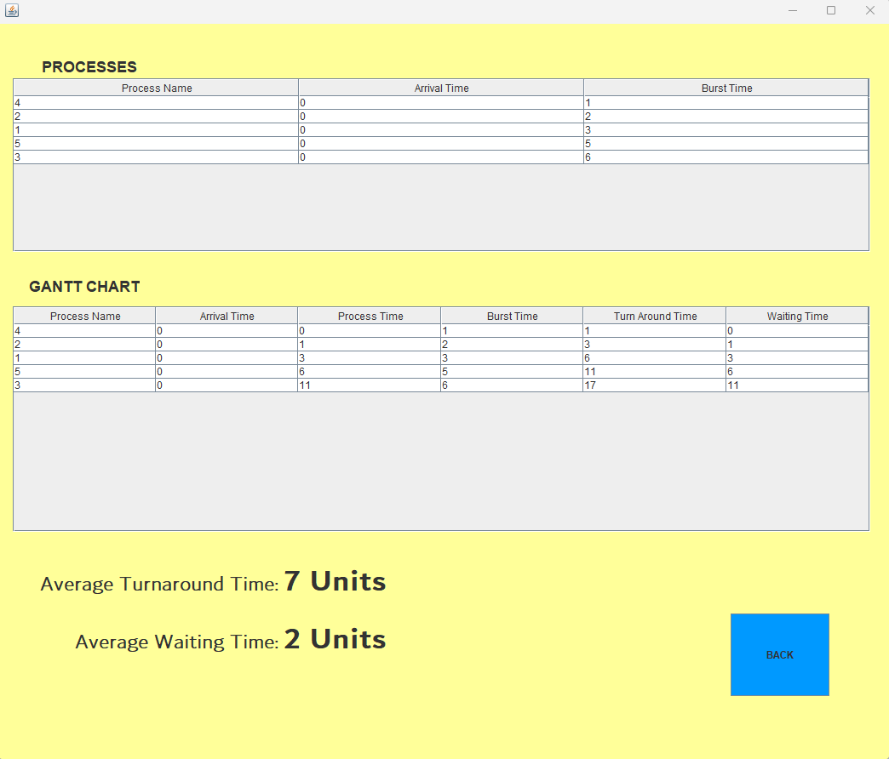

SJF non-preemptive scheduling aims to minimize the total waiting time and turnaround time, making it an optimal algorithm in terms of minimizing the average completion time. It is efficient when the burst times of processes are accurately known in advance. It schedules the process with the shortest burst time first, leading to better resource utilization. SJF can achieve high throughput when it consistently selects processes with shorter burst times, allowing for more processes to be completed in a given time frame. SJF non-preemptive scheduling has some problems like longer tasks might wait too much, we need to know task times beforehand, it can lead to underusing resources, it's a bit hard to set up, it's not so predictable with changing situations, and it doesn't consider task priority.
In order to have a successful execution of my project, you need to input numbers with a comma after it because the comma determines that it will go to the next execution. As you can see it has a normal GUI and not so stylish because I’m out of time but still, it works. So I recommend to input the numbers according the rules I given so that it will have a successful executions. There is a possibility of bugs and error of this so if there is, you can tell me so that I’ll make a resolve.